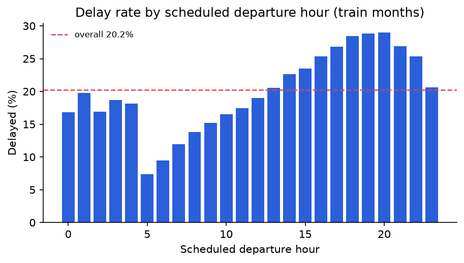
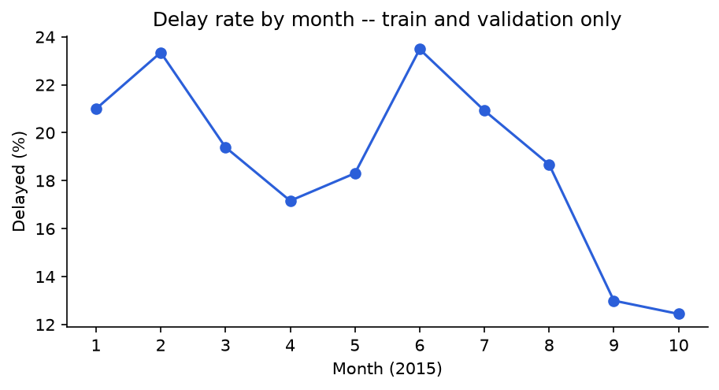
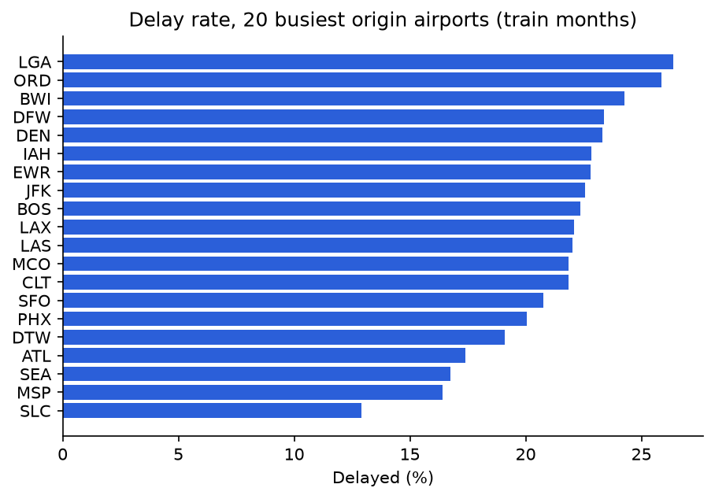
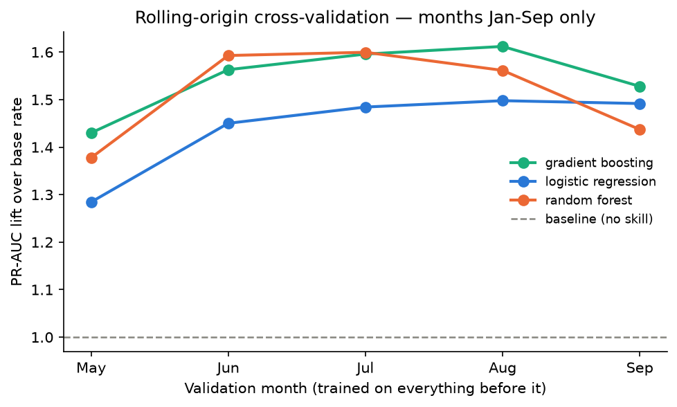
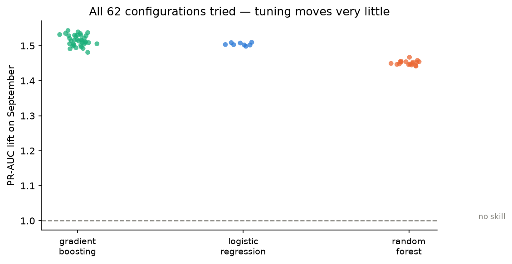
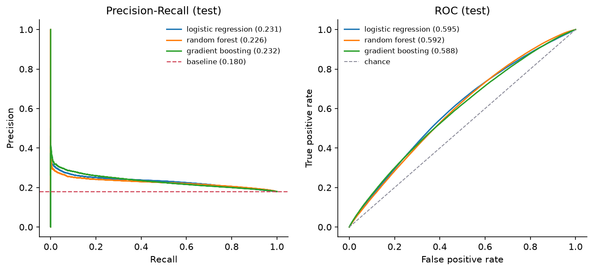
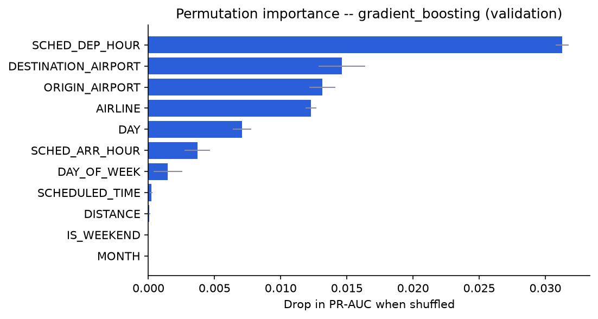
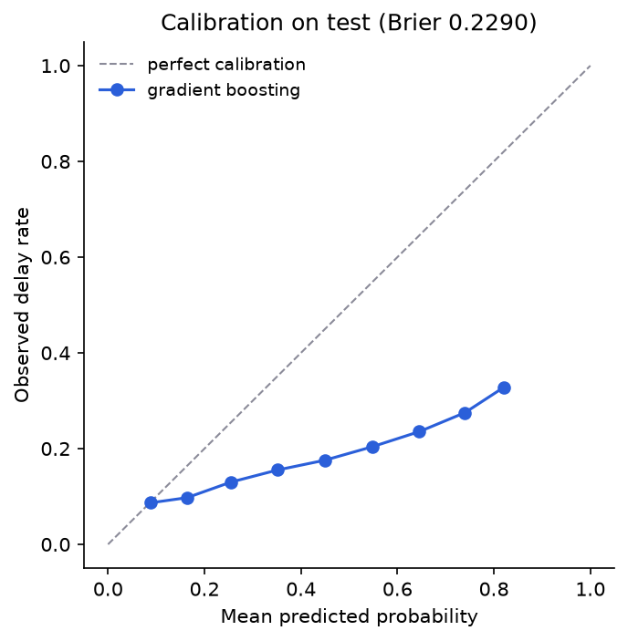
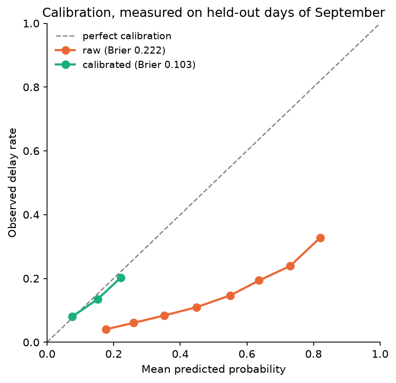

Predict a flight
Choose a real route and departure time, as a scheduler would see it. The logistic-regression model runs in your browser from its published coefficients — the same arithmetic as the Python model, verified against scikit-learn to within 1e-6.
Predictions are estimates based on historical flight data and should not be treated as guaranteed flight outcomes.
Final test results
Measured once on November–December 2015, after every modelling decision was frozen on earlier months.
The decision threshold
A probability is not a decision — it needs a cut-off, and the cut-off is a trade-off with no free lunch: catch more real delays and you raise more false alarms.
These are saved evaluation results, not a new evaluation.
The numbers below were measured on the test set with our final model
(gradient boosting) and are read back from
data/threshold.json. Moving the slider re-reads those
saved counts; it does not re-score any data, and it does not change
the predictor above, which uses logistic regression.
Project dashboard
Method, evidence and limitations. Longer explanations sit inside the expandable sections.
The question
Using only schedule-time features — carrier, route, scheduled departure hour, distance and calendar variables — how accurately can machine-learning models predict whether a US domestic flight in 2015 will arrive more than 15 minutes late in a later, unseen time period, compared with a simple baseline?
- One row is
- one scheduled US domestic flight leg in 2015
- We predict
ARRIVAL_DELAY ≥ 15 min→ delayed (the US BTS definition of a late arrival)- Prediction is made
- at scheduling time, before departure
- So we may use
- carrier, origin, destination, scheduled departure and arrival times, planned duration, distance, calendar fields
- We exclude
- cancelled and diverted flights — they have no arrival delay to label
- The claim is
- an operational risk estimate, not a causal explanation
The limits of the claim
Because cancelled and diverted flights are dropped, every number on this page applies to flights that actually operated. A flight cancelled in a snowstorm never enters our data, so we are not predicting disruption in general — only lateness among flights that flew.
The intended claim is deliberately narrow: that schedule-time information alone carries measurable signal about arrival lateness, and that this signal can be quantified against a baseline on a later time period. We do not claim to explain why a flight is late, and we do not claim the model transfers to other years or to international routes.
The data
US Department of Transportation Flight Delays and Cancellations
for 2015, published on Kaggle as
usdot/flight-delays
(flights.csv, airlines.csv,
airports.csv). One row per flight leg, plus lookup
tables for carriers and airports. We do not redistribute the raw
data; the README explains how to download it.
Data-quality audit — two defects we had to handle
Two problems in this dataset would quietly corrupt the results if left alone. We checked for both in code rather than assuming.
Exploratory figures — what the schedule already tells you
Delay risk climbs steadily through the day. An early-morning departure starts on an aircraft already in position; an evening departure inherits every delay that happened upstream of it.





Preprocessing, and how we avoid leakage
This dataset is a trap for exactly the mistake it looks like it
rewards. It ships with columns known only during or after a
flight: actual departure delay, taxi times, air time, and the
airline's own breakdown of delay causes. Feed those to a model and it
scores brilliantly — because it is reading the answer. So we
keep an allow-list, not a drop-list: a column is
unusable unless explicitly named as available at scheduling time, and
assert_no_leakage() raises an error before every single
model fit. Leakage becomes a crash instead of a flattering number.
Used — known at scheduling time
Refused — known only during or after the flight
Rows removed, and why
Transformations, missing values and duplicates
- Derived from the schedule: departure and arrival hour from the published
hhmmtimes, and a weekend flag. Pure arithmetic on fields printed on the ticket, so nothing is learned and nothing can leak. - Missing values: the only gap among operated flights was scheduled duration, filled with the training median. Every missing arrival delay belonged to a cancelled or diverted flight, which we exclude outright.
- Duplicates: no de-duplication is applied. A flight leg is identified by carrier, flight number and date, and repeated legs across days are genuine separate flights, not duplicate records.
- Categoricals: one-hot for logistic regression, integer codes for the tree models. Airports seen rarely in training are pooled, because a handful of flights cannot support an estimate.
- Clock hours enter logistic regression as sine and cosine, so 23:00 sits next to 00:00 instead of 23 units away from it.
- Scaling for logistic regression only; trees split on order and do not care.
- Every transformer is fitted on the training rows alone and then applied unchanged to validation and test.
The chronological split
Training uses January–August, tuning uses September, and November–December is held back and scored once. Nothing is shuffled: a random split would let a model learn from flights that departed after the ones it is graded on. The full table, the delay rate in each period and the October deviation are on the Evaluation tab.
Baseline and models
Start with the model that cannot be beaten on accuracy and is worthless anyway: always predict “on time”. It is right about four times in five and never once identifies a delayed flight. That is the whole reason accuracy is not our headline metric, and why this baseline sits in every comparison.
Why compare these four, and what each assumes
The four methods are deliberately a ladder of flexibility on the same inputs, which is what makes the comparison informative. If a linear model matches the boosted trees, the limit is the information in the features, not the model's capacity — and that is a finding, not a failure.
- Majority baseline. Predicts the majority class always. No assumptions, no learning, no parameters. It exists to make every other number interpretable.
- Logistic regression. Assumes the log-odds of delay are a linear, additive function of the features. Cheap, stable and interpretable: each coefficient is a readable effect, which is why it is the model that runs in your browser.
- Random forest. Many deep decorrelated trees, averaged. Assumes nothing about functional form and captures interactions — a given carrier at a given hour — with no feature engineering. Averaging reduces variance.
- Gradient boosting. Trees fitted in sequence, each correcting the errors left by the last. Usually the strongest of these on tabular data, and the most prone to overfitting if tuned carelessly, which is why its settings were chosen on validation alone.
How we evaluate
A random train/test shuffle would let the model learn from flights that departed after the ones it is graded on — and in a dataset where delays cascade through a day, that is an advantage it would never have in practice. We split by calendar instead, which mirrors the real task: learn from the past, predict a future period.
Why not ordinary cross-validation? And the rolling-origin check we ran instead
Ordinary k-fold cross-validation would be wrong here. Shuffling flights at random puts December in the training folds and June in the held-out fold, so the model learns from the future — the exact leakage the chronological split exists to prevent. Its estimate would also be optimistic in a way that never survives contact with a real deployment.
But a single validation month is thin evidence for choosing between models, so we also ran the time-aware equivalent: rolling-origin cross-validation, where each fold trains on every month before the one it validates on. Five folds, September at the end, and the test months never loaded.

How much was hyperparameter tuning ever going to buy?

Metrics in full, and why each one is here
- PR-AUC (average precision). Headline. Summarises the precision/recall trade-off across every threshold, for the minority class. An uninformative model scores exactly the base rate, so the base rate is the floor to beat.
- Lift over baseline. PR-AUC divided by the period's base rate. Needed because the delay rate differs between September (quiet) and November–December (busy), which makes raw PR-AUC incomparable across periods.
- Precision, recall, F1. Reported at the single chosen threshold, because that is the only point at which a decision is actually made.
- ROC-AUC. Reported for completeness. It is optimistic under heavy imbalance, which is why it is not the headline.
- Accuracy. Reported only to demonstrate its failure: the baseline wins on it while catching zero delays.
- Brier score and calibration curves. Measure whether a stated probability means what it says, which precision and recall cannot see.
- Bootstrap confidence intervals. 200 resamples of the test set, plus a paired bootstrap for model-vs-model comparison, so we can say whether a gap is real as well as large.
Results
95% confidence intervals come from 200 bootstrap resamples of the test set. Lift is PR-AUC divided by the base rate: what the model adds over knowing nothing.
Is the best model actually better?
Precision–recall and ROC curves

Which schedule fields carry the signal?

The probabilities are not calibrated — and that matters

Fixing calibration, without spending the test set
The fix is a monotonic mapping from raw score to probability, fitted by isotonic regression. Because it is monotonic it cannot reorder any flight, so precision, recall and the AUCs are untouched — only the level changes, which is precisely the defect.
We fitted it on the validation month only, and measured it honestly by splitting September in half: the mapping learned from 1–15 September and was scored on 16–30 September, days it had never seen. The test months were not touched, so the published test numbers above stand exactly as measured.

Where the model goes wrong
Representative mistakes
The most confident errors in both directions, drawn from the test set. Nothing in the schedule distinguishes these flights from their neighbours, because what separated them was weather or a late inbound aircraft — neither of which we can see.
Error breakdown by hour, carrier, month and distance
Limitations
- No weather. One of the largest real causes of delay is absent from the dataset. This is the ceiling on everything above.
- No inbound-aircraft state. The single best predictor of a delayed departure is the aircraft arriving late from its previous leg, and at scheduling time that is unknowable.
- Uncalibrated probabilities. Raw scores are relative risk, not probabilities; the predictor shows a corrected value fitted on September, which under-states risk in busier months.
- One year. 2015 schedules, fleets and carriers. Fleet mixes, fuel prices and airline on-time behaviour have all moved since, so we make no claim about today or about other years.
- Operated flights only. Cancellations and diversions are excluded by construction, so this does not predict disruption in general.
- October is missing entirely because of the airport-code defect, so validation rests on a single month, September — a quiet one.
- An atypical test period. November and December carry holiday traffic, and performance measurably degraded there.
- One million training rows, not 3.8 million, so the tree models finish on a laptop. All models share the same rows, so the comparison is fair, but more data might have helped them.
- US domestic only. Nothing here generalises to international routes, other countries' air-traffic systems, or carriers absent from the 2015 US schedule.
- Association, not causation. Evening flights are riskier; evening does not cause delay. The schedule is a proxy for accumulated upstream disruption, so no number here supports an intervention — moving a flight to the morning would not transfer the morning delay rate to it.
Conclusion
Reproducing this
- Clone the repository.
- Download the three CSVs from Kaggle and put them in a
Dataset/folder next to the repository. We do not redistribute the raw data. python -m venv .venv, activate it, thenpip install -r requirements.txt. Exact versions behind every number here are pinned inrequirements.lock.txt.python src/config.pyto confirm the paths resolve.- Run the steps in order — each writes JSON that this page reads, and later steps depend on earlier ones:
step01_audit_eda.py— audit and exploratory figuresstep02_preprocess_split.py— cleaning, features, chronological splitstep03_models.py— baseline and three models, tuned on validationstep04_export_model.py— coefficients to JSON for this page, feature importancestep05_final_eval.py— the test set, opened oncestep06_rolling_cv.py— rolling-origin CV (no test data)step07_calibrate.py— isotonic calibration (validation only)step08_grid_search.py— optional: the wide tuning search (no test data)
- Verify:
python src/check_site_parity.py(the browser predictor equals scikit-learn), thennode src/check_site_render.mjs(every section renders with real numbers). - Serve the site locally:
cd docs && python -m http.server 8000. Openingindex.htmldirectly will not work, because browsers blockfetchoverfile://.
The split is defined in code, the seed is fixed at 42, and every figure and number on this page is read from a JSON file that those scripts wrote. Setup, data access, citations and our AI-use disclosure are in the repository README.